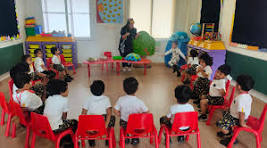
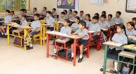
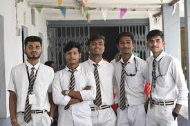

Home / Academics
We follow the CBSE curriculum with a focus on conceptual learning, critical thinking and overall personality development. Our structures aim at transforming basic curriculum standards into high functional actionable analytical paths for students.
Standard uniform progression pathways ensuring excellent conceptual mastery metrics.
Visual aids architecture and analytical mapping to retain deep logical structures.
Practical performance setup across lab infrastructure systems and project metrics.
Balanced emotional intellect indicators along with sportsmanship profiles.

A joyful beginning with play based learning methodologies.
Focuses on basic spatial tracking, motor coordination metrics, vocal alignment structures and primary interaction principles via immersive play toolsets.
Building strong foundation with concept based education frameworks.
Emphasis shifts toward descriptive analytics tools, grammar modules, logical computing variables and core environment evaluation structures.

Strengthening knowledge systems and critical logic pathways.
Students engage deep theoretical chemistry, complex computational mathematics logic, and world history timelines to broaden baseline knowledge metrics.
Academic excellence with character development & stream specialization.
Rigorous boards preparatory frameworks offering specialized streams: Science, Commerce & Humanities. Structured around maximizing score parameters and cracked selection arrays.

We strictly deploy Continuous and Comprehensive Evaluation framework models aligned safely under direct CBSE regulatory systems.
Periodic assignments tracker, live laboratory projects tests, logic quizzes, research journals, group reviews.
Bi-annual centralized term assessment metrics focusing on complete theoretical logic and conceptual recall systems.
Our institution has consistently achieved premium benchmark grades in secondary boards metrics across regional zones over continuous intervals.